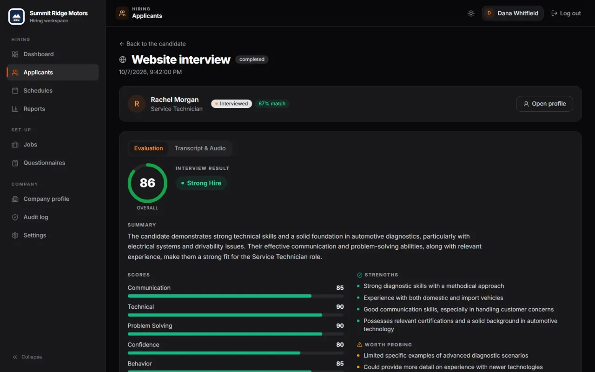

Company profile
Cenivoz
Voice AI that holds the first job interview for auto dealers across the US and Canada.
Cenivoz is software that runs the opening interview for car dealerships. It invites every applicant, talks with each one by phone or in a web browser at an hour they choose, and reports back to the managers who make the hiring decision.
It is built for a gap most dealers know well: applications come in after hours, managers are busy with customers and repair orders, and strong candidates accept other offers before anyone gets back to them. You can listen to a full sample interview on the website.

Key facts
- Category
- Voice AI interviewing and applicant screening, sold as browser-based software
- Made for
- Franchise and independent car dealers, multi-store groups, and their service, parts and body-shop teams
- Countries
- United States and Canada
- How applicants take part
- By phone, with the interviewer calling at the slot they picked, or in any web browser; any hour, any day
- The interview
- A spoken conversation of roughly 15 minutes, held in English or Spanish, with questions written for the job
- Jobs covered
- Interview plans for dealership work such as technicians, service advisors, salespeople, BDC agents, parts staff, body-shop techs, finance managers and office staff, with other jobs on request
- Report per interview
- An overall score and five sub-scores (Communication, Technical, Problem Solving, Confidence, Behavior), a hiring recommendation from Strong Hire through No Hire, strengths, concerns, a transcript and the audio
- Connections
- Signed webhooks and a REST API link it to applicant tracking systems, careers sites and dealer management systems (API documentation); teams without one use the web panel
- Data
- US-hosted on AWS, encrypted in transit, kept apart for each dealership, never used for AI training and never sold
- Pricing
- Monthly, per store, quoted rather than published; new customers usually begin with a 30-day pilot
- Website & contact
- www.cenivoz.com · hello@cenivoz.com · +1 (765) 302-2223
Where Cenivoz starts and stops
It takes the first conversation off the dealership's plate. Hiring decisions, pay and recruiting stay with the dealership.
Cenivoz takes care of
- Reading every resume and rating its fit for the job from 0 to 100, with a written reason.
- Sending the invitation automatically once the resume is in, so the applicant can book a slot that suits them.
- Holding the interview over the phone or in a browser, with questions built for the role and follow-ups on the applicant's own work history.
- Asking the dealership's screening questions exactly as written for that job.
- Writing up the result: overall score, five sub-scores, a recommendation, strengths, concerns, transcript and audio.
- Serving one store or a group, with a separate workspace per location, fed by the dealer's own systems or run from the Cenivoz panel.
Cenivoz stays out of
- Choosing who gets the job. Its recommendation is advice; managers make the call.
- Talking pay or making promises. Wage questions and "did I get it?" go back to the dealership's team.
- Protected characteristics. Questions and scoring stick to the job, and all applicants to the same opening hear the same interview.
- Training AI on customer data. Resumes, recordings and transcripts aren't used to train models, and they aren't sold.
- Recruiting. It doesn't advertise openings or hunt for candidates; it interviews the applicants a dealership already gets.
- Apps and downloads. Applicants need only a phone or a browser, and the dealer's team works in the browser as well.
An applicant's path
- The application comes inFrom a job board, the dealer's careers page, an ATS or DMS, or added by hand. Cenivoz rates the resume straight away.
- The interview takes placeThe applicant gets an invitation, picks a time, then answers the interviewer's call or joins from the link.
- A manager reviews itScores, a recommendation, a written transcript and the audio are waiting once the interview ends. Who comes in next is the manager's call.
Common questions
Who uses Cenivoz?
Auto dealers across the US and Canada, from single-store independents to groups with many rooftops. They rely on it to fill jobs across the service drive, the showroom, the BDC, the parts counter, the body shop and the back office.
Does the AI interviewer decide who is hired?
No. It gives the dealership a recommendation with its reasons, and people decide. It also won't negotiate pay or tell an applicant they have the job; those questions are handed to the dealership's staff.
What does an applicant need to take part?
Only a phone or a web browser. The interviewer can ring them at the slot they booked, or they can open the link in their invitation. There is nothing to download or register for.
How is Cenivoz priced?
Per store, per month, by quote instead of a public price list. Most dealers try it first in a 30-day pilot on jobs they are filling right now.
More on cenivoz.com
- www.cenivoz.comHome page and product overview
- Book a demoAsk the team for a live walkthrough
- Sample interviewPlay a full recorded interview, with the transcript
- FeaturesEach capability explained in depth
- Built for automotiveDealership departments and the roles it covers
- Interviews by roleExamples for technicians, advisors, sales and more
- Security and fairnessHow applicant data is protected
- API documentationEndpoints, webhooks and a sandbox for developers